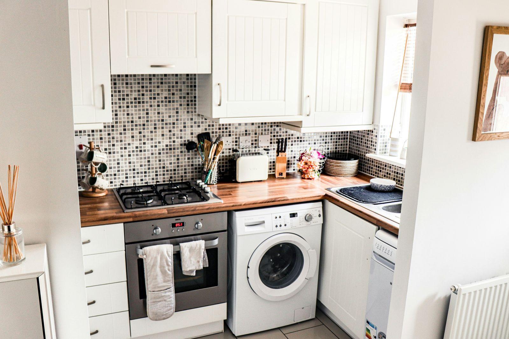

Small kitchen storage that doesn't require a renovation

A galley or studio kitchen usually has two or three cabinets and maybe two feet of counter, which fills up fast once you own more than a single pot. The fastest gains come from going vertical and using the dead space that's already there — above the cabinets, on the inside of doors, under the sink — instead of trying to fit more onto the counter itself.
1. Stackable cabinet shelf riser
Approx. $15–25 for a set of 2Most cabinets have several inches of dead air above a stack of plates or bowls. A riser splits that space into two usable levels instead of one, so a cabinet that fit one stack of plates now fits plates on the bottom and mugs or bowls on top. Look for a sturdy metal one over plastic — it holds more weight without flexing.
See options on Amazon →2. Over-the-sink dish drying rack
Approx. $30–50A standard dish rack claims a permanent chunk of counter whether you're using it or not. An expandable rack that sits directly over the sink basin reclaims that counter space entirely, and folds flat or lifts off when you need the sink for anything else. Measure your sink width before buying — most are adjustable but have a minimum and maximum span.
See options on Amazon →3. Under-cabinet stick-on shelf
Approx. $18–30Mounts to the underside of an existing cabinet with adhesive strips — no screws into the cabinet itself. It adds a shelf for mugs, paper towels, or a spice rack in the empty air between the counter and cabinet bottom, which is otherwise just wasted vertical space.
See options on Amazon →4. Pull-out under-sink organizer
Approx. $25–40The area under the sink is usually the messiest cabinet in the kitchen because everything gets shoved in around the pipes. A sliding two-tier organizer works around most standard pipe layouts and turns that cabinet into two accessible shelves instead of one deep, chaotic pile you have to unpack to find anything.
See options on Amazon →5. Magnetic knife strip
Approx. $12–20A knife block eats several inches of counter permanently. A magnetic strip mounts to the wall (or with adhesive strips if you can't drill) and holds the same knives vertically, freeing that counter space entirely while keeping blades more visible and easier to grab than digging through a drawer.
See options on Amazon →Vertical before you buy more bins
Before adding another countertop organizer, look up — at the space above your cabinets, under them, and over the sink. In most small kitchens, that unused vertical space is bigger than any drawer you could add.